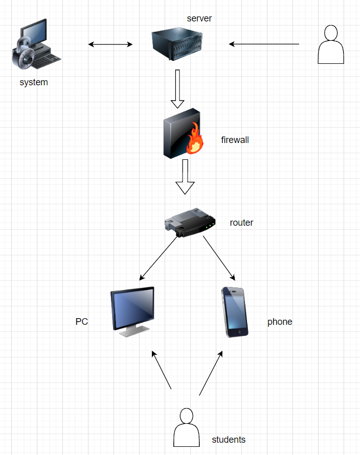
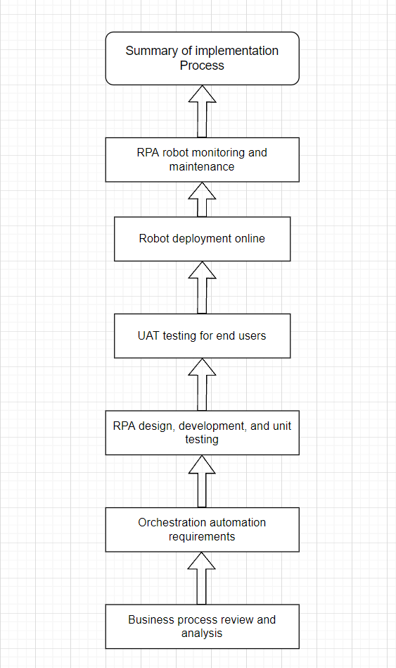

Robot process automation
Hardware: CPU
Software: RPA uibot
Values: stick to the original intention and form the core competitiveness of the enterprise based on the construction of the underlying soil.
Values drive business growth and pay attention to product quality. We bring value to society or enterprises, and society or enterprises give us corresponding feedback and rewards.
Methods: for large-scale RPA projects, it is recommended to start the management consulting project separately, and follow-up implementation will learn from the management consulting results, involving the RPA projects of the whole department, which will inevitably have an impact on the posts and responsibilities of the change process.
The relevant work of business process combing and management change should be followed up in time. The system implementation depends on mature products. The technical complexity is relatively low and the maturity of business blueprint is relatively high.
Using similar ASAP methodology, waterfall model and agile model are not completely opposite and can complement each other.
 | Problem | Answer |
|---|---|
| What's your name | Phonix Gong Yiyang |
| Name this system | Robot process automation |
| What are the system objectives | Automate desktop-based business processes and workflows that meet certain applicability criteria |
| List 3 essential system features and components | Recorder,Development Studio,Plugin/ Extension |
| List 3 essential hardware from this system | External video capture card, network analyzer,The hard disk |
| List 3 essential software from this system | RPA uibot,IS-RPA,Mindsaya |
| List 2 external system components | Change date and time format, SAP operation |
| List 2 system benefits | 1. Fast and easy deployment and low maintenance costs without requiring application changes. 2. Improve efficiency and reduce errors |
| List 2 project difficulties | RPA robots need to complete repetitive work based on strong rules, involving cross-system and cross-department business process collaboration. The form of RPA robots in the enterprise is horizontal, connecting various business modules.n |
| Problem | Answer |
|---|---|
| What's your name | Cro Xiang Fei |
| Name this system | Robot process automation |
| What are the system objectives | Provides another way to automate the end user manual process by mimicking the end user manual process on a computer |
| List 3 essential system features and components | Convenient deployment, easy to use, high return on investment |
| List 3 essential hardware from this system | Button case, portable display, CPU |
| List 3 essential software from this system | UiPath,Automation Anywhere,TagUI |
| List 2 external system components | Email operation, voice to text conversion |
| List 2 system benefits | 1.Process standardization 2.improve customer satisfaction |
| List 2 project difficulties | 1. No clearly defined business sustainability plan. 2. Lack of technical resources |